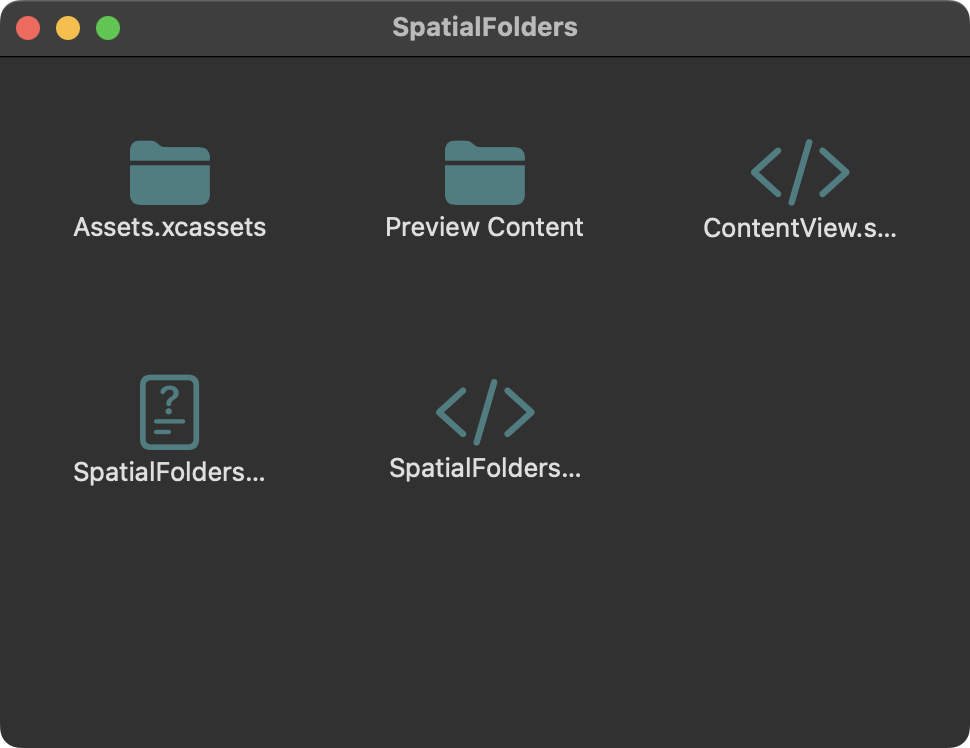
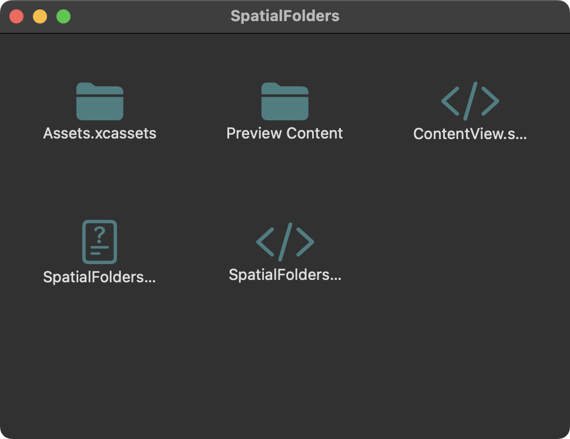

Leaf's Projects

The State of EV Charging
Affinity Photo | February 25, 2025
Blue bottle crucifix vinyl post-ironic four dollar toast vegan taxidermy. Gastropub indxgo juice poutine.
Learn MoreSpatialFolders
Xcode | November 26, 2024
A macOS File Manager application designed to recreate the workflow of Finder in Classic Mac OS.
Learn More 


"I Voted!" sticker
Adobe Illustrator | September 16th, 2024
Blue bottle crucifix vinyl post-ironic four dollar toast vegan taxidermy. Gastropub indxgo juice poutine.
Learn MoreArchitectural Shapes and Colors
Adobe Illustrator | October 16th, 2024
Architecture from around my university campus vectorized by hand in Illustrator. I focused on finding angles that complemented the diagonal lines of the center photo of my dorm's hallway.